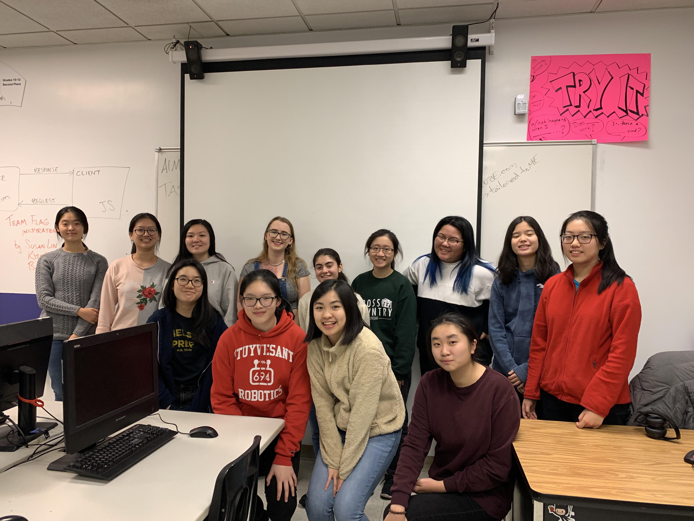
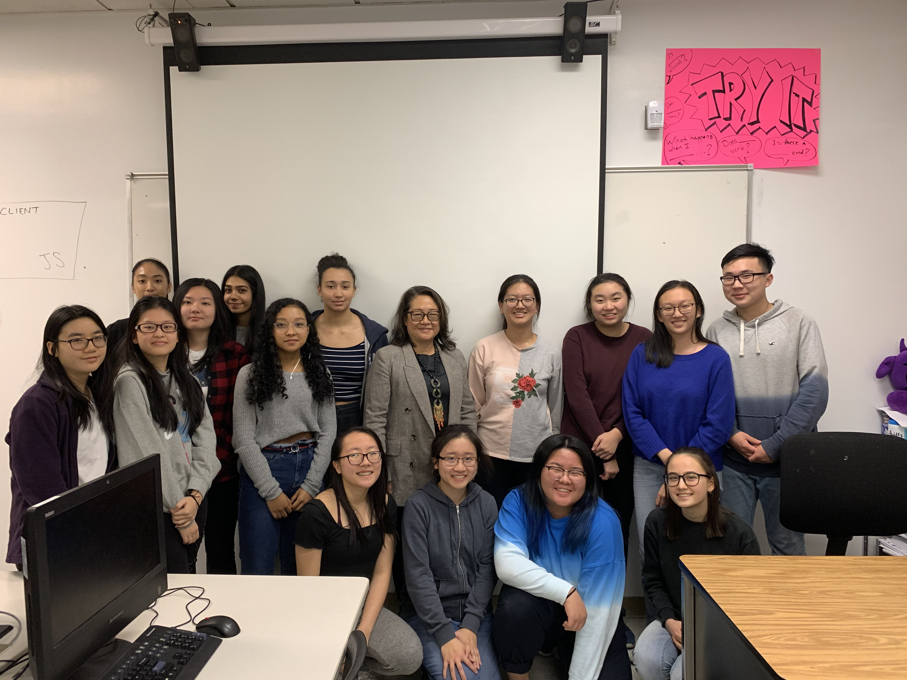

Events
NEW!
Date: Monday, February 24th
Location: Room 251
Description:
The speaker (Edward “Ed” Cotler) is a corporate finance expert currently working at Gotham Crypto, a company that advises blockchain-based companies on business strategy and capital raising. Ed has previously served as an equities program trader and an asset correlation trader at Merrill Lynch, a mortgage derivatives trader at Deutsche Bank, and a Vice President in the Investment Banking Division of Goldman Sachs & Co. Ed possess extensive knowledge in business and computer science, as he graduated MIT with an undergraduate degree in Computer Science and Engineering, and received an MBA from Columbia Business School. Ed is also a Stuy alumni and continues to serve MIT as the regional chair for NYC and Columbia Business School as a Career Coach. If you’re interested in learning more about blockchain and its role in business, come to Ed’s lecture!
If you are interested, please fill out the interest form here.
[CLOSED]
Date: Wednesday, February 12th
Location: 100 6th Ave, New York, NY 10013
Description:
Girls Who Code will be hosting a trip on February 12th (Wednesday) to TwoSigma, an investment hedge fund that utilizes new technologies. We‚Äôll be given a tour of the main floor of their technology building which has their hacker lab and the robot they built/coded last year for the FIRST corporate challenge. We will then be given a speaker panel of 2-3 of their female employees and they'll discuss how they got into CS and their journey along the way before opening the floor to questions. We‚Äôll be leaving right after school to get there at 4, and it will end around 5-5:30. There will be pizza too! Seats are limited so be sure to sign up ASAP üôÇ
[CLOSED]
Date: Tuesday, December 17th
Location: Room 251
Description: Stuyvesant Girls Who Code will be having a guest speaker come this Tuesday (12/17) in room 251 after tenth period. The speaker (Caitlin Stanton) is a Stuyvesant alumna and senior at Cornell University majoring in electrical and computer engineering, with minors in computer science and business. She is the President of the Alpha Omega Epsilon engineering sorority at Cornell, the vice president of Women in Computing at Cornell, and the founder of two hackathons: ProgramHers and def hacks(). She has interned at several tech companies, including Microsoft, Qualcomm, and #BuiltByGirls. She is excited to share her journey with technology and her support for women in technology. If you’re interested in hearing advice from an experienced woman in tech, especially from a Stuyvesant alumna’s perspective, Caitlin’s talk is the place to be!
[CLOSED]
Date: Wednesday, December 4th
Location: Room 251
Description: Stuyvesant Girls Who Code will be hosting their second speaker this week! The speaker, Minerva Tantoco, was New York City’s first ever CTO and founded the Mayor’s Office of Technology and Innovation. She has a track record in mobile applications, enterprise architecture, product management, technology strategy, innovation, software design and execution. She served in the Board of the New York Hall of Science, as part of the New York Tech Alliance, and has spoken about Tech for Good at MIT and at AdWeek on responsible AI and the importance of an inclusive STEM workforce. In short, she is woke! If you want to hear more about any of these topics or simply want to meet an amazing a successful woman in STEM, pull up to her talk!
[CLOSED]
Date: Monday, November 18th
Location: Room 251
Description: Stuyvesant Girls Who Code will be hosting their first guest speaker! Isabel Abonitalla is a junior at Hunter College studying computer science and bioinformatics. She is the Director of Internal Affairs and Operations of HAX, a non-profit dedicated to providing hackathons to women across the country, as well as an experienced front-end developer and product manager. She is proficient in several languages, including R, Python and HTML/CSS, and has created several personal projects that tackle issues such as mental health and environmental sustainability. She is excited to share her journey with technology inside and outside of school and give advice on developing personal projects. If you’re interested in catching a glimpse of what studying computer science is like, Isabel’s talk is the perfect place to go.
Speaking with Ed Cotler
Monday, February 24th
Today, Girls Who Code @ Stuy met Edward “Ed” Cotler: a very accomplished Stuyvesant alumni and the founder of Gotham Crypto. He explained to us what blockchains were and how they worked, but we also gained quality business advice from him as well. Ed explained to us that we should only work for a project that we believe in and that we should be careful with who we have as advisors as we should get complimentary voices on a team. Then, to further our understanding of blockchains, we did a case study together involving tokenomics. We ended on the note that although right now at Stuy, it seems that everyone is in competition with each other to strive for 100%, in the real world, we have to learn from each other and build upon each other’s works because math and sciences are complicated and no one truly knows 100% of everything.Click here to access Ed's presentation.


Trip to TwoSigma
Wednesday, February 12th
Today, Girls Who Code @ Stuy went on a trip to TwoSigma, a financial investment hedge fund that is also very techy. They showed us their “HackerLab” which was a place where they could come up with ideas and just play around with them. They also restored old computers there as well and followed the motto “Because why not?” when questioned the reason for their projects. We then headed over to the conference room where we met women who worked in the company with jobs ranging from software engineer to product designer. Over pizza and soda, we had a Q&A session with them where we learned about their experiences in CS and gained advice for our own futures.Scavenger Hunt
Friday, December 20th
Today, Girls Who Code @ Stuy hosted their annual end-of-the-year Scavenger Hunt. There were two parts to the hunt, one online and one physical. The hunt consisted of clues that participants had to solve using what they've learned in Girls Who Code this semester, including HTML, CSS, Javascript, terminal commands and more! After successfully completing the scavenger hunt, participants were rewarded with a rubber ducky. There was also a party to celebrate the upcoming holidays after the event in room 301. Girls Who Code will resume the second Friday after break (there's a fun little lesson planned!). Exciting things coming second semester!Access the online portion of the scavenger hunt here.
Access the solutions to the scavenger hunt here.
Speaking with Caitlin Stanton
Tuesday, December 17th
Today, Girls Who Code @ Stuy met Caitlin Stanton: a Stuyvesant alumni who has made major strides for women in tech. Caitlin brought us through her journey into tech and spoke about her introduction into the workforce, projects that she has worked on and key points that she lives by. She also told us about her life at Cornell including information about her major, Electrical and Computer Engineering and some of her key points that have gotten her through college include finding a support system, stepping out of your comfort zone and taking care of yourself. At the end, she had a Q & A session, including giving us advice about how to build ourselves up as women in tech.
Speaking with Minerva Tantoco
Wednesday, December 4th
During today’s event, Girls Who Code @ Stuy met Minerva Tantoco: an incredibly accomplished woman who has done everything from founding a startup to creating a bank. Throughout the event, she described the trajectory of her career and her work as CTO of New York City. She told us about her focus on inclusivity and ethics and elaborated on one of her projects, LinkNYC (the free-wifi kiosks on the street!) and how inclusivity played a major role in this project. She also had a Q & A section answering all of our questions and told us about her day-to-day life, her motivations for her projects: the gender disparity in tech and the importance of fixing it.
Speaking with Isabel Abonitalla
Monday, November 18th
During today's event, Isabel Abonitalla described her experience with CS, her classes, and hackathons. She talked about how computer science was not her first major in college, but she fell in love with it during an internship. One of the biggest takeaways from the lecture was the fact that anyone can play a role in computer science no matter what field they are in. Isabel also told us about the classes she was taking at Hunter College, and gave us a brief overview of hackathons and a project she made during a hackathon. Her favorite thing about hackathons is that they are more hands-on than regular classes, and you always leave one with a full-fledged project. Finally, she answered any remaining questions or concerns we had about women working in the field of computer science.